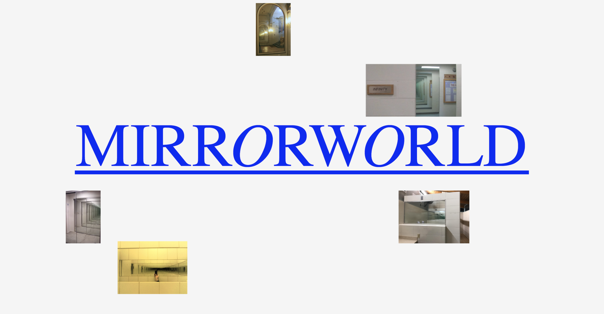
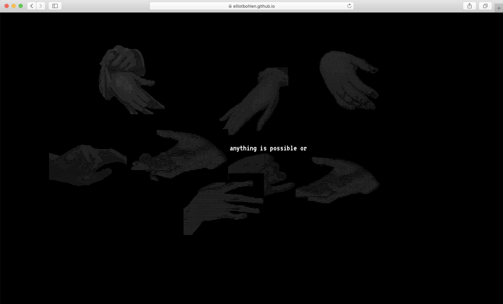
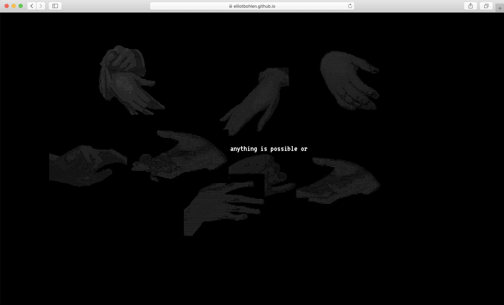

Hi! im elliot
elliot bohlen
thesis fall 2020
learning software + hardware
in brooklyn
A site and book featuring mirrors from craigslist paired with literature discussing mirrors. The text ranges from topics like the mirrorworld to myths (breaking a mirror yields seven years of bad luck).



I created a chrome extension for surfin the web! I wanted to create a dynamic (and frustrating) experience using a clean and simple aesthetic! One of the goals for this extension was to expose a webpage's structure. This is virtually invisible to those who don't write and understand HTML. By solely showing divs by their outline, it exposes the skeleton of the web in an easily understood way. Another aspect of this virus is the deletion of all content except for links. Theory wise- the web is a medium centered around links (as opposed to consuming content using books for example- which feature a chronological narrative structure.) The main difference is that the user can travel in multiple different directions and are free from a chronological structure. By only keeping the links, the user is forced to surf the web with no means of direction except for peeking in the address bar to check where you are in the web. This highlights the essential function of the net: links!


For this project, I created two websites utilizing the Advice Slip API. The blue site plays with the idea of getting advice directly from a computer, so I used ASCII art and a Markov text generator in Python to algorithmically skew the API's output even further. The first one is just a pun lol.
 



Some editorial stuff :-)
BOOKS